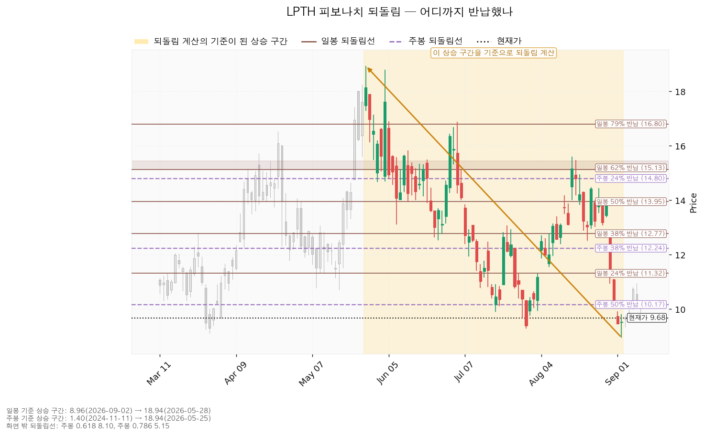
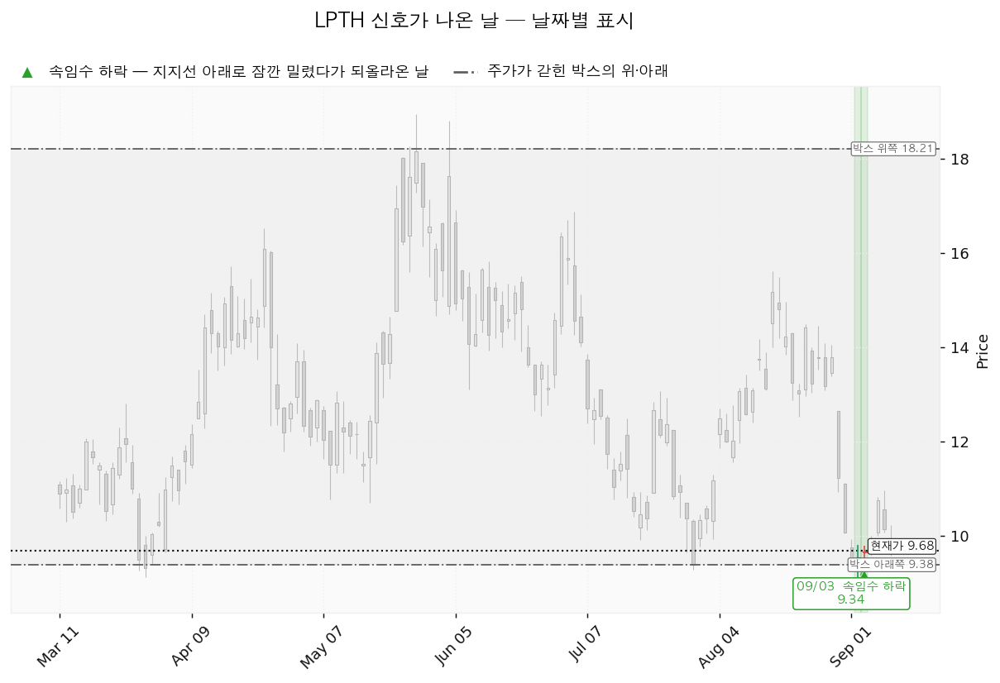
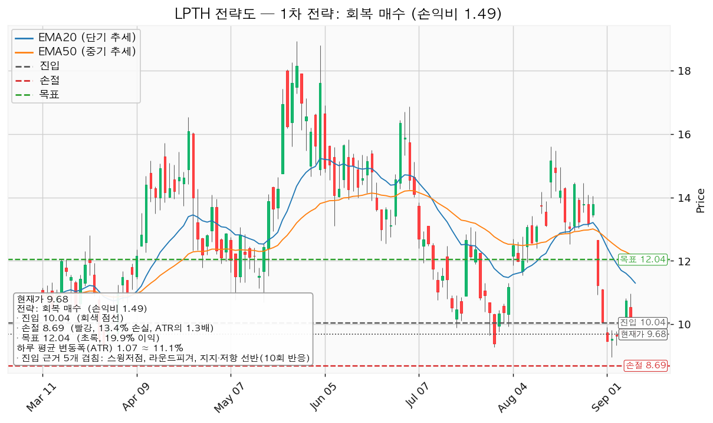
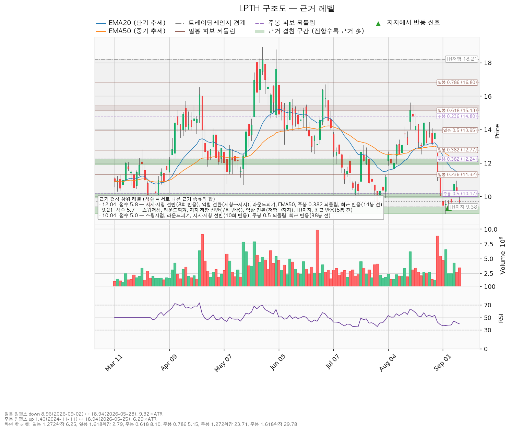

| 구분 | 가격 | 판정 방식 | 현재가(9.68달러) 대비 | 상태 |
|---|---|---|---|---|
| 회복선(진입 조건) | 10.04달러 | 일봉 종가로 회복한 뒤 되돌림에서 지지되는지 — 실적 발표 이후의 종가만 유효합니다 | +3.7% (하루 평균 변동폭의 0.34배) | 9월 8·9일 두 번 종가로 넘었다가 되밀림 |
| 집행 손절 | 8.69달러 | 장중 저가 터치 시 집행 | -10.2% | 진입한 경우에만 유효 — 미진입 상태에서는 아무 의미가 없습니다 |
| 관망 종료 기준 | 8.96달러 / 날짜 조건은 오늘 도래 | 일봉 종가가 8.96달러(아래쪽 겹침 구간의 바닥) 아래로 마감. 날짜 조건이던 실적일이 오늘이므로, 이제는 발표 내용이 판정 재료입니다 | -7.4% | 유지 중 |
| 확인선 | 12.04달러 | 일봉 종가 돌파 후 되돌림에서 지지되는지 | +24.4% | 미돌파 |
| 폐기선(구조) | 9.38달러 | 종가 이탈 후 3거래일 내 회복 실패(또는 그 전에 8.31달러 아래 종가 마감) + 반등에서 저항으로 확인 | -3.1% (하루 평균 변동폭의 0.28배) | 유지 중 |
① 직전 트리거의 성적표 — 회복선은 충족됐으나 진입은 성립하지 않았습니다.
직전 리포트는 "9월 11일 실적 이후의 10.04달러 종가 회복"만 유효한 진입으로 규정했습니다. 실제 종가는 9월 8일 10.75달러, 9월 9일 10.14달러로 10.04달러를 두 번 넘었고, 9월 10일 9.68달러로 다시 아래로 마감했습니다. 가격 조건은 충족됐지만 실적 발표 전에는 진입하지 않기로 정해 두었으므로 진입은 성립하지 않았고, 장부에도 LPTH 체결 기록이 없습니다. 목표 12.59달러(그 사이 최고가 10.96달러)와 손절 8.72달러(그 사이 최저가 9.46달러) 어느 쪽에도 닿지 않았습니다. 실적 전 진입을 보류한 판단은 이틀 만에 가격이 회복선 아래로 되돌아오면서 지금까지는 손실을 피하는 쪽으로 작동했습니다.
② 좌표의 이동 — 회복선만 그대로이고 나머지는 전부 내려왔습니다.
| 좌표 | 직전(09-08) | 이번(09-11) | 왜 움직였나 |
|---|---|---|---|
| 회복선 | 10.04달러 | 10.04달러 | 같습니다. 9.90~10.17달러 선반이 어제도 반응했습니다(10회 반응) |
| 폐기선 | 9.04달러 | 9.38달러 | 박스 판정 창이 180봉에서 90봉으로 바뀌면서 박스 하단이 9.04 → 9.38달러로 올라왔습니다 |
| 확인선 | 12.59달러 | 12.04달러 | 50일 지수이동평균이 12.35 → 12.10달러로 내려와 11.92~12.24달러 구간에 합류했고, 이 구간(5.8점)이 12.52~12.77달러 구간(4.9점)을 제치고 가장 두꺼운 상단 저항이 됐습니다 |
| 집행 손절 | 8.72달러 | 8.69달러 | 아래쪽 겹침 구간의 바닥이 9.00 → 8.96달러로 내려간 만큼 함께 내려왔습니다 |
| 목표 | 12.59달러 | 12.04달러 | 확인선과 같은 이유입니다 |
| 손익비 | 1:1.94 | 1:1.49 | 진입은 같은데 목표가 0.55달러 내려왔습니다 |
| 하루 평균 변동폭 | 1.1159달러 | 1.0704달러 | 9월 초의 급락 이후 변동폭이 다소 줄었습니다 |
③ 판단은 바뀌지 않았고, 직전 리포트의 수치 하나를 정정합니다.
결론은 직전과 같은 관망입니다. 다만 정정할 것이 있습니다. 직전 리포트는 잉여현금흐름이 +323만 달러로 조회돼 영업현금흐름 -776만 달러와 맞지 않는다고 밝히고 판정을 실적으로 미뤘습니다. 이번 조회에서는 세 수치가 서로 맞습니다 — 영업활동 현금흐름 -833만 달러, 설비투자 126만 달러, 잉여현금흐름 -959만 달러(모두 2025-06-30 결산 기준). 불일치는 해소됐고, 해소된 값은 영업 단계에서 현금이 나가고 있다는 쪽입니다.
박스 안쪽 판정도 한 칸 움직였습니다. 직전에는 분산 우위였으나 이번에는 중립입니다. 상승봉 대 하락봉 거래량비가 1.08에서 1.18로 올라온 것이 이유이며, 나머지 두 항목(지지 테스트 거래량 증가, 저점 절하)은 그대로입니다.
라이트패스 테크놀로지스(LPTH)는 열화상 카메라와 산업용 계측기에 들어가는 적외선 광학 렌즈·광학 조립체를 만드는 미국 기업입니다.
| 항목 | 값 |
|---|---|
| 현재가 | 9.68달러 |
| EMA20 / EMA50 (20일·50일 지수이동평균) | 11.30 / 12.10달러 — 둘 다 현재가 위에 있습니다 |
| RSI(14) (0~100 사이의 과열·침체 지표) | 39.7 — 약세 구간이나 통상적 과매도 기준선 30 아래는 아닙니다 |
| ATR (하루 평균 변동폭) | 1.0704달러 = 주가의 11.06% |
| 국면 판정 | 횡보 레인지(구조 유지 — 하단 사수 조건부), 추세는 하락 |
일봉과 주봉 모두 계산 가능한 구간이 있었습니다. 일봉 기준 구간이 직전 리포트와 달라졌습니다 — 9월 2일 저점 8.96달러가 확정되면서, 3월 저점에서 5월 고점까지의 상승 구간 대신 5월 고점에서 9월 저점까지의 하락 구간이 기준이 됐습니다. 그래서 일봉 되돌림선은 "얼마나 반납했나"가 아니라 "하락분의 얼마를 되돌렸나"를 뜻합니다.
| 기준 | 구간 | 0.236 | 0.382 | 0.5 | 0.618 |
|---|---|---|---|---|---|
| 일봉(하락) | 2026-05-28 18.94달러 → 2026-09-02 8.96달러 | 11.32 | 12.77 | 13.95 | 15.13 |
| 주봉(상승) | 2024-11-11 1.40달러 → 2026-05-25 18.94달러 | 14.80 | 12.24 | 10.17 | 8.10 |

| 날짜 | 신호 | 가격 | 해석 |
|---|---|---|---|
| 2026-09-02 | spring(속임수 하락) | 8.96달러 | 박스 하단 아래로 장중에 뚫고 내려갔다가 되돌아 올라온 움직임입니다. 매도 물량을 털어내는 신호로 쓰입니다 |
| 2026-09-03 | spring(속임수 하락) | 9.34달러 | 다음 날 같은 성격의 움직임이 한 번 더 나왔습니다 |
이 신호가 요구하는 뒷받침은 일부만 나왔습니다. 9월 8일 종가 10.75달러로 회복선 10.04달러를 넘는 반등이 나왔고, 이는 직전 리포트가 기다리던 되돌아 올라오는 힘에 해당합니다. 그러나 9월 9일 10.14달러, 9월 10일 9.68달러로 이틀 만에 회복선 아래로 되밀렸습니다. 9월 2일의 거래량이 평균의 1.94배로 이전 지지 테스트들보다 컸다는 점도 그대로 남아 있습니다. 반등은 나왔으나 유지되지 못했고, 그래서 국면 후보(매집)와 박스 안쪽 판정(중립)은 여전히 결론에 이르지 못한 상태입니다.

이번 분석에서 성립하는 셋업은 reclaim_long(회복 후 롱 전환) 하나뿐입니다. 되돌림 저가매수 셋업과 지지 확인 매수 셋업은 산출되지 않았습니다. 유효 박스는 있으나 박스 안쪽 판정이 매집 우위에 이르지 못했고, 현재가가 여러 번 지켜진 지지 선반 위에 자리 잡은 상태도 아니기 때문입니다.
| 항목 | 내용 |
|---|---|
| 이름 / 방향 | reclaim_long / 롱 |
| 진입 | 10.04달러 — 일봉 종가로 회복한 뒤(실적 발표 이후의 종가만 유효) |
| 진입 근거 (겹침 5.0점) | 스윙저점 + 라운드피겨 + 지지·저항 선반(10회 반응) + 주봉 0.5 되돌림 + 최근 반응(38봉 전) / 구간 9.90~10.17달러 |
| 손절 | 8.69달러 (진입 대비 -13.4%, 하루 평균 변동폭의 1.26배) |
| 손절 근거 | 근거 겹침 구간(8.96~9.38달러, 5.7점) 바로 아래에 두었습니다. 구간 안쪽이 아니라 아래에 둔 만큼 손절 폭이 넓어졌고 그만큼 손익비가 낮아졌습니다 |
| 목표 | 12.04달러 (진입 대비 +19.9%) |
| 목표 근거 (겹침 5.8점) | 지지·저항 선반(8회 반응) + 역할 전환(저항→지지) + 라운드피겨 + EMA50 + 주봉 0.382 되돌림 + 최근 반응(14봉 전) / 구간 11.92~12.24달러 |
| 손익비 | 1:1.49 (손절 폭 1.26 ATR) |
| 구조적 손절 기준 손익비 | 1:1.49 — 위와 같습니다. 이 셋업의 손절 8.69달러는 이미 겹침 구간 아래에 둔 구조적 손절이므로, 손절을 하루 변동폭 안으로 조여서 얻은 손익비가 아닙니다 |
| 구조 증명도 | 회복 확인형 (가중치 1.0) — 저항을 종가로 되찾은 뒤에만 들어가므로 진입가는 불리하지만 구조가 먼저 증명됩니다 |
| 엣지의 종류 | 모멘텀 — "저항을 종가로 되찾으면 그 방향이 이어진다"는 전제입니다. 자주 틀리고 소수가 크게 맞는 유형이며 승률을 기대하는 셋업이 아닙니다(이 유형의 일반적 성격이며 이 엔진에서 측정한 값이 아닙니다) |
| 청산 | 목표 12.04달러에서 전량입니다. 트레일링은 걸지 않습니다 |
| 비중 | 계좌의 7.5% (1만 달러 계좌면 750달러어치). 1회 매매 손실 한도 1%(100달러)를 손절 폭 13.4%로 나눈 값이며, 한 종목 상한 13%보다 낮아 그대로 씁니다 |
대표 셋업 선정 이유: 손익비 1.49 × 구조 증명도(회복 확인형) × 근거 겹침 5.0점으로 선정했습니다. 산출된 셋업이 하나뿐이므로 손익비 1등과의 트레이드오프 문제는 발생하지 않습니다. 손익비가 1을 넘으므로 보류 대상도 아닙니다.
모멘텀 전제에 고정 목표를 붙인 점: 진입 근거는 모멘텀이지만 집행은 박스 규칙을 따릅니다 — 손절은 구조 아래에 두고, 목표 12.04달러에서 전량 청산하며, 트레일링은 걸지 않습니다. 12.04달러 위 구간은 이 포지션의 연장이 아니라 새 셋업으로 다시 잡습니다.
분할하지 않는 이유: 중간 목표 11.07달러에서 50%를 익절하고 잔여분 손절을 진입가 10.04달러(본전)로 올리는 안도 함께 산출됐습니다. 그러나 그 중간 청산의 손익비는 0.77에 그쳐, 전 구간을 합친 손익비가 1.49에서 1.13으로 내려가고, 중간 청산 뒤 본전 손절에 걸리면 0.39까지 떨어집니다. 헤드라인 손익비 1.49는 목표에서 전량 청산할 때만 성립하는 숫자이며, 집행 정책이 고정돼 있으므로 이 리포트는 전량 청산 하나만 계획으로 냅니다.

저항 회복이 확인되기 전이므로 현재가 9.68달러에서 사는 것은 권하지 않습니다. 대기 좌표는 다음과 같습니다.
| 항목 | 값 |
|---|---|
| 아래쪽 진입 후보 | 9.21달러 (-4.9%, 겹침 5.7점 — 스윙저점 + 라운드피겨 + 지지·저항 선반(7회 반응) + 역할 전환(저항→지지) + 박스 하단 + 최근 반응(5봉 전)) / 구간 8.96~9.38달러 |
| EMA20 투영치 | 현재 11.30 → 5봉 후 10.66달러 |
| EMA50 투영치 | 현재 12.10 → 5봉 후 11.66달러 |
이 투영치는 현재가 9.68달러가 5거래일 동안 그대로 유지될 경우 이동평균선이 내려앉을 위치이며, 가격 예측이 아닙니다. 이동평균이 내려오면서 회복선 위쪽 저항까지의 거리가 좁아진다는 뜻으로만 읽으시면 됩니다.
이 종목의 하루 평균 변동폭은 주가의 11.06%로 큽니다. 손절 폭 13.4%는 그보다 넓으므로(1.26배) 논지와 무관한 일상적 흔들림만으로 손절에 닿을 가능성은 낮습니다. 다만 손절 폭 자체가 13%를 넘는다는 점은 감안하셔야 하며, 비중 7.5%가 그 넓은 손절 폭에서 나온 값입니다.
진입에서 목표까지는 2.00달러로 하루 평균 변동폭의 1.87배입니다. 트레일링을 검토할 만한 폭(2배 이상)에 미치지 못하므로 단일 청산으로 끝냅니다(이 2배 기준은 관행이지 정설이 아닙니다).
확인선과 대표 셋업의 목표가 같은 12.04달러인 것은 모순이 아니라 분기입니다.
박스 상단 18.21달러는 맥락으로만 적습니다. 현재가에서 크게 떨어져 있어 실행 좌표가 되지 못합니다.
| 단계 | 트리거 | 의미 | 행동 |
|---|---|---|---|
| ① 관찰 | 일봉 종가가 10.04달러 아래로 마감 | 구조 이탈의 시작일 뿐 무효가 아닙니다. 되돌아 올라오면 오히려 속임수 하락일 수 있습니다 | 신규 진입만 중단하고, 집행 손절은 그대로 둡니다 |
| ② 경고 | 이탈 후 3거래일 안에 10.04달러를 종가로 회복하지 못하거나, 그 전에 일봉 종가가 8.97달러 아래로 마감(하루 평균 변동폭의 1배만큼 더 밀림) — 둘 중 먼저 오는 쪽 | 저항 회복 실패 가능성이 우세해집니다 | 잔여 비중 축소. 반등이 나오면 이 가격에서의 반응을 확인합니다 |
| ③ 무효 | 반등이 10.04달러에서 막히고 그 아래로 되밀림(지지가 저항으로 전환) | 셋업 폐기 — 구조 해석이 틀린 것으로 확정 | 포지션 정리 후 새 구조가 만들어질 때까지 관망 |
집행 손절 8.69달러는 이 3단계 판정과 무관하게 별도로 작동합니다. 그리고 장중 일시 이탈은 어느 단계에도 해당하지 않습니다.
폐기선 9.38달러는 현재가에서 하루 평균 변동폭의 0.28배 거리라 실무적으로 작동합니다. 다만 이 종목의 논지는 가격만으로 결판나지 않습니다. 오늘 실적에서 아래가 나오면 가격이 어디에 있든 롱 전환 논지를 접습니다.
1. 내년 EPS 컨센서스 0.02달러 경로가 다시 하향되는 경우 — 이미 90일 사이 0.03 → 0.02달러로 -33.3% 내려온 상태입니다. 두 번째 하향은 흑자 전환 시점이 계속 밀린다는 뜻입니다. 2. 영업활동 현금흐름이 또 음수로 나오는 경우 — 직전 수치가 -833만 달러입니다. 설비투자를 -42.2% 줄이고 있는데도 영업 단계에서 현금이 계속 나간다면, 투자가 앞선 적자가 아니라 본업의 적자입니다.
조건: 10.04달러 종가 회복 후 지지 확인 → 12.04달러 종가 돌파 구조: 9월 2·3일 속임수 하락이 진짜였음이 확인되고 → 거래량을 동반한 상승이 나온 뒤 → 되돌림에서 지지를 확인하고 → 상승 국면으로 넘어가는 순서입니다 행동: 실적 확인 후 10.04달러 회복과 지지를 확인한 뒤 계좌의 7.5%로 진입하고, 12.04달러 돌파 시에는 새 셋업으로 다시 잡습니다
조건: 9.38달러를 지키면서 12.04달러 아래 박스에 머무름 구조: 구조는 그대로 유지되는 상태입니다. 매물을 소화하는 데 시간이 필요한 국면이며, 부정적 신호가 아닙니다 행동: 신규 진입은 보류하고 아래 세 가지를 추적합니다
| 추적 항목 | 좋아지는 모습 | 현재 관측치 |
|---|---|---|
| 지지 테스트 거래량 | 테스트를 반복할수록 매도 거래량이 줄어듦 | 증가 (2.24배 → 0.64배 → 1.43배 → 1.94배) |
| 박스 안 저점 | 저점이 절상됨 | 절하 (10.70 → 9.90 → 9.28 → 8.96달러) |
| 상승봉 대 하락봉 거래량비 | 1보다 뚜렷하게 커짐 | 1.18 (직전 1.08에서 개선) |
세 항목 가운데 개선된 것은 거래량비 하나입니다. 이 표의 값이 바뀌는지가 관망을 이어갈지 판단하는 실질적 기준입니다.
조건: 9.38달러 종가 이탈 후 3거래일 내 회복 실패(또는 그 전에 8.31달러 아래로 종가 마감) + 반등에서 9.38달러가 저항으로 확인 구조: 물량을 모으던 구간이 아니라 모아둔 물량을 넘기던 구간이었다는 뜻이며, 추가 저점 갱신 가능성을 엽니다 행동: 포지션을 정리하고, 투매가 한 번 크게 나온 뒤 새 박스가 만들어질 때까지 관망합니다
점수는 서로 다른 근거 종류의 가중치 합입니다. 같은 종류가 여러 개 붙어도 한 번만 가산되므로, 점수가 높다는 것은 성격이 다른 근거들이 같은 가격대에 모여 있다는 뜻입니다.
| 가격 | 구간 | 점수 | 근거 |
|---|---|---|---|
| 12.04달러 | 11.92~12.24 | 5.8 | 선반(8회 반응), 역할 전환(저항→지지), 라운드피겨, EMA50, 주봉 0.382 되돌림, 최근 반응(14봉 전) |
| 9.21달러 | 8.96~9.38 | 5.7 | 스윙저점, 라운드피겨, 선반(7회 반응), 역할 전환(저항→지지), 박스 하단, 최근 반응(5봉 전) |
| 10.04달러 | 9.90~10.17 | 5.0 | 스윙저점, 라운드피겨, 선반(10회 반응), 주봉 0.5 되돌림, 최근 반응(38봉 전) |
| 12.62달러 | 12.52~12.77 | 4.9 | 스윙저점, 선반(10회 반응), 역할 전환(저항→지지), 일봉 0.382 되돌림, 최근 반응(14봉 전) |
| 11.07달러 | 10.86~11.32 | 4.8 | 선반(9회 반응), 역할 전환(저항→지지), 라운드피겨, EMA20, 일봉 0.236 되돌림 |
| 8.05달러 | 8.00~8.10 | 2.1 | 라운드피겨, 주봉 0.618 되돌림 |
현재가 9.68달러는 9.21달러 구간(5.7점)과 10.04달러 구간(5.0점) 사이의 빈 공간에 있습니다. 위아래 모두 하루 평균 변동폭의 0.5배 안쪽에 있어 방향이 정해지지 않은 자리이며, 이것이 지금 진입 근거가 약한 이유입니다. 역할 전환 표시가 붙은 구간들은 과거 저항이던 자리가 지지로 바뀐 곳이므로, 다시 저항으로 되돌아갈 수도 있는 가격대입니다.

| 항목 | 값 |
|---|---|
| 애널리스트 수 / 추천등급 | 5명 / strong_buy |
| 목표주가 (평균 / 최저 / 최고) | 15.58 / 15.00 / 17.00달러 |
| 후행 PER (주가 ÷ 지난 1년 주당순이익) | 산출 불가 (후행 EPS -0.50달러, 적자) |
| 선행 PER (주가 ÷ 앞으로 1년 주당순이익 추정치) | 484.0배 (선행 EPS 0.02달러) |
| 올해 EPS 컨센서스 | -0.155달러 (범위 -0.29 ~ -0.02) |
| 내년 EPS 컨센서스 | +0.02달러 (범위 +0.01 ~ +0.03) |
| 다음 실적일 | 2026-09-11 (오늘) |
(a) 배수 두 가지를 함께 봅니다. 후행 PER은 적자라 산출되지 않고, 선행 PER 484.0배는 선행 EPS가 0.02달러라는 아주 작은 분모에서 나온 값입니다. 컨센서스 기준 이익 성장률은 올해 +38.9%, 내년 +112.9%이지만, 두 해 모두 기준이 적자이거나 0.02달러 수준이라 이 성장률로 배수를 정당화할 수 없습니다. 이 종목은 이익 배수로 비싸다·싸다를 판정할 수 있는 단계가 아닙니다. 올해 적자 -0.155달러에서 내년 +0.02달러로 흑자 전환하는 것이 컨센서스이며, 판단은 배수가 아니라 이 전환이 실제로 일어나는지에 달려 있습니다.
(b) 목표주가는 분포로 봅니다. 평균 15.58달러이지만 최저 15.00달러, 최고 17.00달러이고, 현재가 9.68달러는 애널리스트 5명 전원의 목표 가운데 가장 낮은 15.00달러보다도 아래입니다. 다섯 명 전부가 틀렸거나, 아직 목표를 고치지 않았거나 둘 중 하나입니다.
(c) 하락의 정체 — 배수 수축이 아니라 추정치 하향입니다.
| 기간 | 올해 EPS | 내년 EPS |
|---|---|---|
| 90일 전 | -0.02달러 | +0.03달러 |
| 30일 전 | -0.02달러 | +0.03달러 |
| 현재 | -0.155달러 | +0.02달러 |
올해 적자 폭이 -0.02달러에서 -0.155달러로 벌어졌고(90일 변화율 +675.0%, 적자 확대), 내년 이익 추정치도 -33.3% 내려왔습니다. 추정치가 내려가면서 가격이 내렸으므로 배수 수축이 아니라 실적 전망의 하향입니다. 저가매수 논리를 쓸 수 있는 국면이 아닙니다.
(d) 현금흐름의 성격. 2025-06-30 결산 기준으로 영업활동 현금흐름 -833만 달러, 설비투자 126만 달러(전년 218만 달러에서 -42.2%), 잉여현금흐름 -959만 달러입니다. 세 수치가 서로 맞으며, 직전 리포트에서 밝혔던 불일치는 해소됐습니다. 영업 단계에서 현금이 나가고 있으므로 설비투자가 앞선 적자와는 성격이 다릅니다. 투자를 40% 넘게 줄이면서도 영업에서 현금이 나간다는 점이 문제의 핵심입니다.
(e) 상승 여력의 분해. 목표주가 평균 15.58달러를 내년 EPS 컨센서스 0.02달러로 나누면 779배가 나옵니다. 현재 선행 PER 484.0배와 비교하면 이 목표주가는 이익으로 설명되지 않습니다. 애널리스트들이 매출 배수 등 이익 외의 기준으로 값을 매기고 있다는 뜻이며, 이익이 목표를 떠받치려면 지금 컨센서스보다 훨씬 큰 이익이 필요합니다. 컨센서스 목표를 근거로 매수하면 이익 전망이 아니라 배수 수준에 거는 판단이 됩니다.
주도주 여부 판정: 주도주가 아닙니다. 추세는 하락이고, 현재가는 EMA20·EMA50 아래에 있으며, 박스 안 저점은 절하됐고, 실적 추정치가 90일 사이 내려왔습니다.
| 날짜 | 이벤트 | 볼 것 |
|---|---|---|
| 2026-09-11 (오늘) | 분기 실적 발표 | ① 영업활동 현금흐름이 음수를 벗어났는지(직전 -833만 달러) ② 가이던스가 내년 EPS +0.02달러 경로를 지지하는지, 아니면 세 번째 하향인지 ③ 올해 적자 컨센서스 -0.155달러 대비 실제치 |
이 리포트는 정보 제공 목적이며 투자 권유가 아닙니다. 최종 판단과 책임은 투자자 본인에게 있습니다.